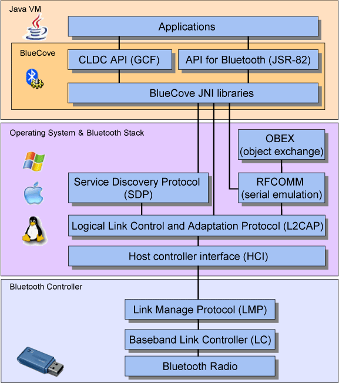

Metodologia
A concepção deste projecto teve como base a linguagem de programação Java e o IDE Eclipse SDK. Foram também utilizadas algumas bibliotecas disponíveis na internet, nomeadamente o WiiRemoteJ e o BlueCove, que faz a gestão da ligação Bluetooth entre o computador e o comando Wii Remote. No seguinte diagrama é possível compreender a hierarquia e o funcionamento das bibliotecas:
